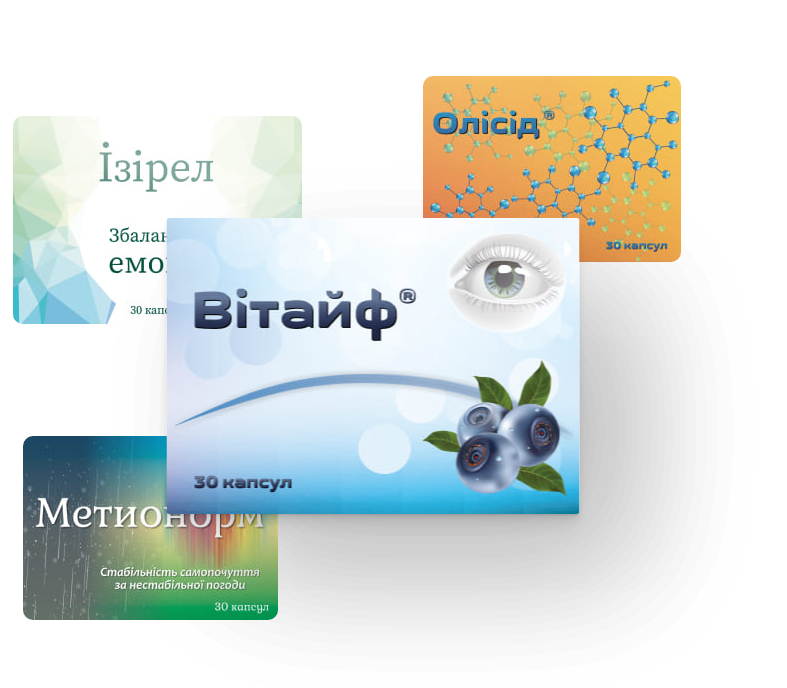

Мета компанії — створення унікальних та інноваційних продуктів.
У 2016 році було випущено в продаж перший препарат компанії «Бовіос Фарм» — Кратепровін.
Вже у 2017 році асортимент продукції збільшився ще на 4 препарати.
Компанія постійно покращує формули та забезпечує контроль якості від стадії розробки до виробництва. Препарати сертифіковані за міжнародними стандартами ISO та HACCP.
Завдяки бурхливій роботі та прагненню до успіху, на сьогодні маємо вже понад 9 власних виробів та це тільки початок нашого шляху…
За 2019 рік ми виготовили:516 066
Упаковок1 548 198
Блістерів15 481 980
Капсул
